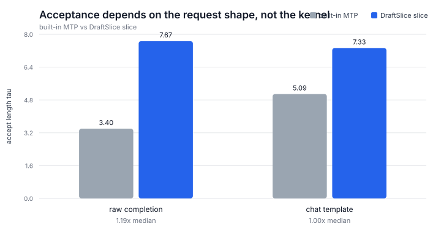
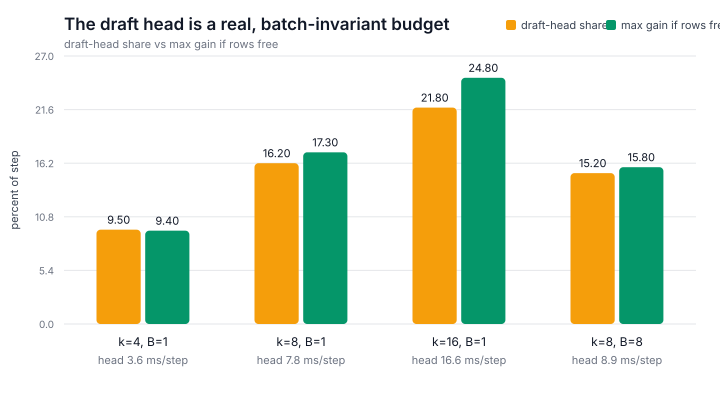

投机解码 · 工程复盘
从 1.19× 到 +6.1%：一次 draft 头切片的生产化复盘
同一个 kernel、同一套 JSON Schema、同一批 tool call。把 prompt 从裸字符串 换成 chat template，端到端收益就从 1.19× 变成 1.00×。最后活下来的，是一条 只有 +6.1% 的 lean 路径，以及一堆同样有价值的负面结果。
一句话结论：draft 头切片是一个真实的 kernel 优化，但在 matched drafter、生产 chat 形状、B=1 的 4B 服务上，它最终只有 +6.1%。剩下的空间不大，而且大部分是工程细节，不是新的算法方向。
1. 我们在做什么
结构化输出（JSON Schema、regex、grammar）有一个很自然的性质：在任意一个 decode 位置，词表里只有一小部分 token 是合法的。一个 248,320 词表的 draft LM head，如果只算当前 grammar 状态允许的行，理论上可以把一次 1.27 GB 的 权重读取缩到几十 KB。
这就是 DraftSlice 的出发点：在 vLLM / SGLang 的投机解码里，给每个请求维护 一份 grammar shadow，把 draft head 的候选行限制在合法集合内；目标模型的 verify 仍然走全词表，保证最终输出不受 draft 影响。kernel 本身不是问题： 4B、bf16、A100 上，全词表 head 约 744 µs，128 行的 slice kernel 约 65 µs，看起来是 11×。
问题从“11× 的 kernel 为什么只剩 6%”开始。
2. 第一个坑：请求形状
最早的一次端到端实验给出的数字是 1.19×。它没有造假，但它
测的是另一个 workload：实验脚本直接把裸字符串喂给 LLM.generate，
而生产环境走的是 /v1/chat/completions，vLLM 会套 chat template。
| 同一引擎、同一 schema、同一批 tool case | built-in τ | slice τ | built-in tok/s | slice tok/s | speedup |
|---|---|---|---|---|---|
| 裸 completion prompt | 3.22 | 7.67 | 91.6 | 108.5 | 1.186× |
| chat template（生产形状） | 5.09 | 7.33 | 129.5 | 128.6 | 0.996×（均值） |

chat/tool template 让开头是一段高度可预测的 tool-call 前缀，matched MTP 在 前两个位置就已经基本猜对（per-position acceptance 252/266、252/266）， 整段 baseline 的 τ 也从 ~3.2 升到 ~5.1。grammar mask 在两种形状下都能把 τ 推到 ~7.3–7.7，但 verify step 的减少从约 50% 缩到约 27%。同一份代码， 收益从 +19% 变成 ~0%。
方法学教训：benefit claim 必须用生产请求形状。裸 prompt 会把 baseline 的 accept length 压低约 2×，从而把 masking/slicing 的收益 夸大 2× 以上。
3. 第二个坑：Amdahl 与 adapter tax
即使请求形状对了，draft head 也只是 speculative step 的一部分。在生产形状 （4B、B=1、k=8、chat/tool）下，用 CUDA event 只测 MTP draft head：
| 指标 | 数值 |
|---|---|
| wall time | 0.918 s |
| output tokens | 115 |
| verify steps | 19 |
| draft head calls | 200（10.5 次/step） |
| full head / call | 0.744 ms |
| draft head 占 wall | 16.2% |
0.744 ms 读 1.27 GB，约 1.72 TB/s，已经贴着 A100 的 HBM
峰值。kernel 没有调优空间；唯一能做的是少读行。按 63% 的 candidate 覆盖率
算，理论 head saving 是
10.5 × 0.63 × (0.744 − 0.065) ≈ 4.5 ms/step。
但最早那版 adapter 的代价是按 每次 draft call 计的。debug timer 拆出来：
| 组件 | ms/step |
|---|---|
| slice logits build | 2.49 |
| grammar shadow fork + D2H | 2.23 |
| contract emission | 0.61 |
| valid-set construction | 0.11 |
| sampled-token D2H | 0.08 |
| 未计时的 dispatch / sync / 分配 | ~14.7 |
| gross adapter tax | ~20.3 |
面对最大 7.1 ms/step 的 head saving，20.3 ms 的 tax 不可能赢。tax 的来源很
具体：每次 call 重建 GPU index tensor、每次 call torch.full
一个 1×V 的输出、每一步都发 contract/trace，以及每个 draft position 后一次
阻塞的 .tolist()——一个 verify step 里 8 次 CPU/GPU 同步。
k=1 时连 shadow fork 都不需要，slice arm 仍然只有 0.95×。
优化器必须装进 head 的预算里，而不是站在它旁边。
4. lean 版做对了什么
DRAFTSLICE_VLLM_LEAN=1 不改变候选集，也不改变 τ。它只改变
“候选 logits 怎么算出来”：
- 缓存 device payload。按精确的
(row, TokenSet identity)缓存 padded int32 token matrix 和 row index，2048 条 LRU。grammar shadow 本来就有按 state 缓存的 CPUTokenSet，payload 可以跨 step / request 复用。 - 按宽度分组。candidate 宽度相同的行共享一次 launch 和 一次权重读取；batch 内相同 grammar state 的行也合并。
- 复用输出 buffer。每个 shape 一个
[rows, vocab]的 fp32 buffer，每次只填-inf，不再torch.full。 - 每个 group 一次 fused launch。没有 exact set 的行才走 全词表 head。
- 热路径不要 telemetry。不做 per-step
DraftContract/trace、不记录 policy、不 compile plan、不跑 screener；如果配置了 profile table，只在每个 verify step 解析一次 cell。 - startup 级 cost gate。未校准的 cost artifact 直接在启动时 关掉 slicing，走 stock speculator；而不是每个 call 交完 shadow tax 再退回 full head。
正确性没有变化：6 个 tool case × 3 reps，greedy token ids 与 built-in 完全 一致，validity 1.0，τ 7.33，accept rate 0.916。
| 单 server、tool-only、45 s、同一会话 | tok/s | median | vs built-in |
|---|---|---|---|
| built-in MTP（9 reps） | 127.8 / 127.7 / 128.6 / 127.1 / 127.0 / 125.6 / 125.4 / 124.8 / 125.6 | 127.03 | 1.000× |
| 旧 non-lean slice（6 reps） | 119.2 / 120.1 / 120.9 / 120.3 / 119.9 / 120.0 | 120.02 | 0.945× |
| lean exact slice（6 reps） | 130.6 / 133.4 / 128.3 / 132.6 / 133.2 / 133.1 | 132.85 | 1.046× |
| lean exact slice（最后 3 reps） | 134.9 / 133.8 / 134.8 | 134.76 | 1.061× |
我不想只报最后 3 次的 134.76。6 次的中位是 132.85（+4.6%），最后 3 次的 中位是 134.76（+6.1%）；两者都对，差异主要来自引擎实例的会话内漂移。真实 可承诺的数字是“+4.6% 到 +6.1%”。
5. 16.2% 的账本
16.2% 的 head share 不会原样变成 16% 的吞吐。它会在四个地方缩水：
| 量 | 数值 |
|---|---|
| draft head calls / step | 10.5 |
| full / sliced head 每次 | 0.744 / 0.065 ms |
| exact candidate 覆盖率 | 63%（1517/2408 calls） |
| 无 valid set 的 fallback | 37% |
| gross head saving | 4.49 ms/step |
| τ 从 5.04 升到 7.33 的 verify 代价（反事实） | −3.0% |
| realized head gain | +7.8% |
| net | +4.6% |
mask 把 τ 从 5.04 推到 7.33。这个模型的 target verify 成本接近 per-token， 多 verify 1.63 个 token/step 要付约 3% 的吞吐；coverage 只有 63%，另外 37% 的 position 仍然读完整的 1.27 GB head；剩下的 per-call 残留开销再吃掉一点。 最后就是 +4.6% 到 +6.1%。

6. 负面结果清单
这个项目真正值钱的部分，可能是下面这些“不要做”。它们都花了实打实的 GPU 时间。
6.1 静态 top-16k 词表（free-form）
如果想绕开 grammar、直接用一个高频词表做 head，生产形状下 τ 从 5.09 掉到 3.62，吞吐 129.7 → 45.8 tok/s，0.35×；B=8 的另一组是 0.49×。draft 需要的恰好是被裁掉的那些 token。这个方向可以彻底放弃。
6.2 int8 draft head
只量化 MTP 的 lm_head，per-row 对称 int8，反量化回 bf16 计算。
1.07% 的相对权重误差下，τ 5.087 → 4.933（−3.0%）；
per-tensor 3.38% 误差下 τ 4.627（−9.0%）。int8 + lean
masking 时 τ 保持 7.333，但那只说明 grammar 候选集修正了 int8 的错误 argmax，
int8 只对 37% 的 fallback 行有用。要为此写一个 int8 GEMV、再存一份 0.64 GB
权重，不划算。
6.3 DFlash all-position
DFlash 一次 forward 出一个 block，position-0 slicing 只覆盖 1/17 的 head。 all-position mask 在 B=1 看起来很好（τ 2.67 → 5.12，vs stock DFlash 约 1.19×），但和 built-in MTP 比只是 B=1 +10.5%、B=8 −1.6%；在 SGLang 上 实测 0.78×。fused packed-bitmask 能把 B=8 的 all-position 从 11.6% 的劣势 拉回来，但 B=32 仍然打平。per-position slice 需要顺序采样、放弃 block 的 批处理，收益上限约 1.35×，工程难度远大于收益。
6.4 CUDA graph 下的 hook
SGLang 的 draft-head hook 在 CUDA graph 下根本不会被调到；vLLM 的 FULL
decode graph 也会绕过 Python hook。强制 --enforce-eager 的代价
比 slice 的收益大（4B EAGLE 约 182 → 60 tok/s）。把 mask/rows 做成 graph
可捕获的静态 buffer 是另一个项目，而且 graph 对全词表 head 本身几乎没用
（HBM-bound）。
6.5 plan / cost / scheduler 上热路径
在 B=1、k=8 下，per-step compile StepPlan 的 plan session 实测
6.9% 的额外开销；未校准的 cost gate 最初还会再叠加 19.8%，
后来改成在 startup 直接关掉 slicing，才把这个损失清零。更关键的是，在结构化
cell 上，per-cell oracle 相对最好的固定配置是 1.000×。
也就是说，这套系统层在 latency 上没有可测的 headroom。它最后只留下一个
“按 workload/batch 选 k 和是否 slice”的路由表，不需要 learned controller。
6.6 多 server 同机 A/A
早期在同一台机器上起三个 vLLM server 做 A/A，旧 slice 测出 0.94×；单 server、同一 GPU、依次重启后是 0.998–1.00×。多 server co-location 会放大 adapter tax，也会让 baseline 自己漂移。生产形状是单 server。
6.7 裸 prompt 的 1.19×
这条已经在前面说过，但它值得单独列出来：一个错误的 benchmark 形状可以 让一个中性优化看起来像 +19%。这比任何 kernel bug 都更贵。
7. 还剩多少空间
这是用户最关心的问题。把能想到的 lever 都列出来，按“上限 / 代价”排序：
| 方向 | 估计上限 | 判断 |
|---|---|---|
| coverage 63% → ~100%（snapshot-position sets） | 再 +2–4 pp | 需要真正的“下一位置”状态设计，工程量最大，收益有限 |
去掉 per-position .tolist() 同步 | ~+1.5% | 中等工程，可能被 async sampler 的复杂度吃掉 |
| lean 在 B≥8 的表现 | 未知，可能 0 或负 | 旧路径 B=8 已经是回归；lean 没有测过，不要假设 |
| CUDA graph 支持 | <1% | baseline 也会变快；全词表 head 是 HBM-bound |
| int8 head | 负 / 中性 | τ −3%；与 lean 叠加时 τ 不变，只帮 fallback |
| TP>1 / 量化 head | 低 | head share 在 B≥8 只有 2–7%，且当前路径不支持 |
| DFlash per-position slice | 上限 ~1.35× | 需要顺序 block sampler，放弃 batched GEMM；all-position mask 在 B≥8 已经不成立 |
| MoE 的 (k, τ) 选择 | B=32 时 k=1 vs k=4 约 +24% | 真实收益，但属于 per-model k 表，不是 draft 头切片 |
把乐观项加在一起，B=1 结构化、matched 4B 上大概还能从 +6.1% 推到 +8–10%，代价是 coverage 和 async 两块硬工程。再往上就需要 换问题：要么是 mismatched drafter（draft 本身不懂语法，grammar guidance 的收益才大），要么是 block drafting 的逐位置状态设计。前者是 upstream 已经在做的事（vLLM #47885、SGLang 的 draft 侧 grammar 缺口），后者难度 远大于收益。
结论：作为“draft 头切片”这个单独命题，空间基本见底。 它是一个 Amdahl 问题，不是一个 kernel 问题。继续投入的边际收益，已经低于 把测量方法、负面结果和 +6.1% 的 lean 路径写清楚的价值。
8. 什么时候值得用
| 场景 | 建议 |
|---|---|
| matched drafter、free-form | built-in，没有东西可切 |
| matched drafter、结构化、B=1 | 可以试 lean exact slice；先在自己的 workload 上做 A/B，不要假设能拿到 6% |
| mismatched / 慢 drafter | 先做 draft 侧 grammar guidance，收益比 head slicing 大 |
| B≥8 生产 | 按 profile cell 门控；这一档历史结果是回归，默认 built-in |
| 必须开 CUDA graph | 当前 hook 会被绕过；要么保持 eager，要么把 mask/rows 做进 graph |
| TP>1 / 量化 head | 保持 stock head；head share 小，路径也不支持 |
9. 代码与复现
代码在 0515wlx/draftslice。 lean 路径是 opt-in：
DRAFTSLICE_VLLM=1 DRAFTSLICE_VLLM_SLICE=1 DRAFTSLICE_VLLM_LEAN=1 \
vllm serve Qwen/Qwen3.5-4B --enforce-eager \
--speculative-config '{"method":"draftslice_mtp","num_speculative_tokens":8}'设计细节、gate 语义、完整账本和限制在 docs/lean-slice.md。 单测覆盖 payload 复用、输出 buffer 复用和与参考 builder 的逐元素一致性：
python -m pytest tests/test_lean_logits.py -q
python -m ruff check src tests
复现时请遵守三条：用生产请求模板；一台机器只起一个 server；把
mask（全 head + grammar mask）和 slice
（只算候选行）分开报，不要用 slice/mtp 一个比值掩盖归因。
如果这篇文章只能留下一句话：先量请求形状，再量 head 占比，最后再谈 kernel 加速。大部分的“加速”不是被 kernel 吃掉的，是被 baseline 和 Amdahl 吃掉的。